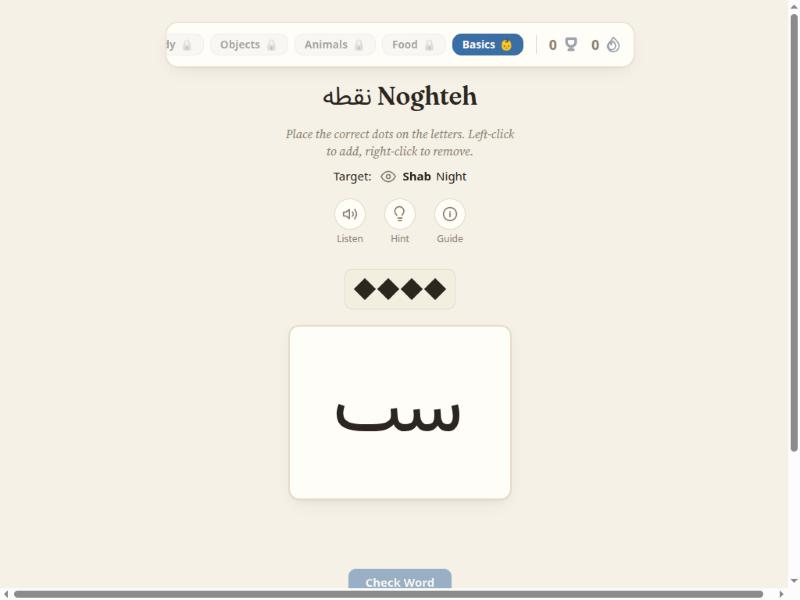
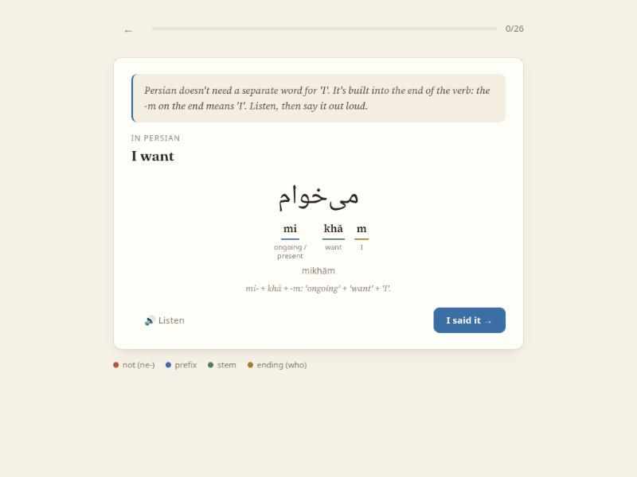
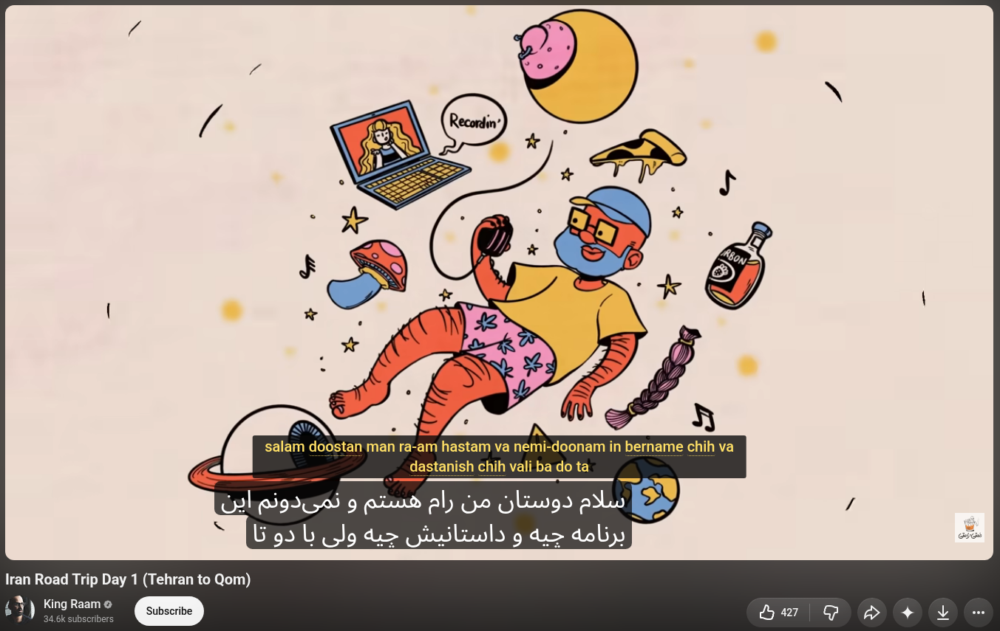

Three small tools for learning to read, write and speak Persian. Each one is free, runs in the browser, and keeps your progress on your own device.

Many Persian letters share the same base shape and differ only by the dots above or below them. Noghteh shows you a word's letter skeletons and you place the right dots on each one to spell it.

A course in colloquial Persian. Instead of memorising vocabulary lists, you build sentences from a handful of recurring pieces, say them out loud, and check yourself against the answer.

A browser extension that shows Persian YouTube subtitles transliterated into Finglish (Persian words in Latin letters), so you can follow along before you can read the script.
The three tools above share one library for transliteration and vocabulary, rather
than each keeping their own copy. It converts between Persian script, macron
transliteration (khāneh) and plain ASCII (khaneh) by aligning
sounds instead of guessing word by word, and holds the 615-entry lexicon they all look
words up in. Zero runtime dependencies, not published to npm — it's source to read,
build, or borrow from directly.